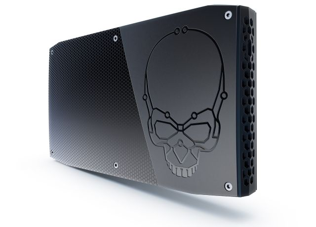
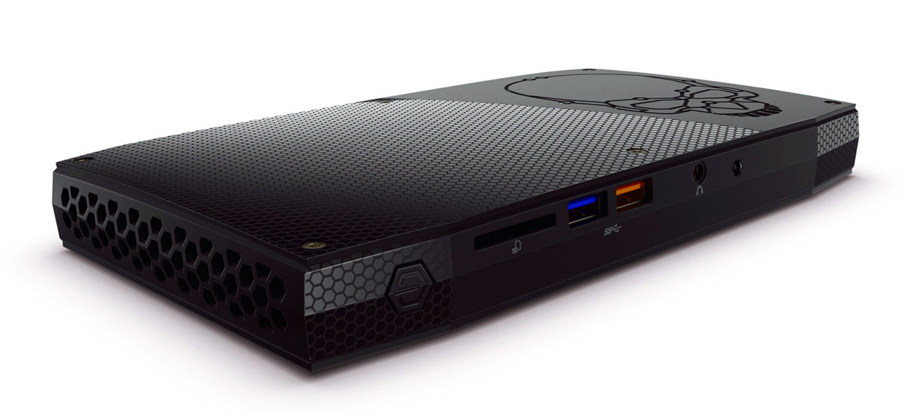

Intel បង្ហាញកុំព្យូទ័រខ្នាតតូចដំបូងគេដើរដោយ CPU Core i7 ជំនាន់ថ្មី
រថយន្តប្រើហ្គាស ប្រយ័ត្នត្រូវថែទាំត្រួតពិនិត្យដិតដល់បំផុត
អតិថិជននៅកម្ពុជានាំគ្នាទិញទូរស័ព្ទ Galaxy S7 edge និង S7 ដូចព្យុះ
ជី សិលា៖ ” ដឹងពីទំនោរអនាគត ដើម្បីក្លាយជាអ្នកជំនួញជោគជ័យ”
Go to news.sabay.com.kh here
Go to eclipse.org here
Go to facebook.com here
Intel បង្ហាញកុំព្យូទ័រខ្នាតតូចដំបូងគេដើរដោយ CPU Core i7 ជំនាន់ថ្មី
ក្រុមហ៊ុន Intel បានបង្ហាញប្រភេទកុំព្យូទ័រ NUC (Next Unit of Computing) ដំបូងគេដែលមានប្រើប្រាស់ CPU Skylake ជំនាន់ចុងក្រោយបង្អស់។

NUC ស៊េរីថ្មីនេះមានឈ្មោះថា “Skull Canyon” ដែលវាបំពាក់ទៅដោយ CPU quad-core Core i7-6770HQ ល្បឿន ២,៦GHz (៣,៥GHz Turbo)។ មិនតែប៉ុណ្ណោះក៏មានបំពាក់នូវ GPU ប្រភេទ Iris Pro 580 និងមានរន្ធ Thunderbolt 3 អាចទ្រាំទ្រ USB 3.1 ដែលមានល្បឿនផ្ទេរ 10Gbps។ កុំព្យូទ័រនេះក៏អាចទ្រាំទ្រ RAM ប្រភេទ DDR4, អង្គផ្ទុកទិន្នន័យប្រភេទ SSD និងមានមកស្រាប់នូវដុំ Wi-Fi, Bluetooth ប្រភេទ Intel 8260 ផងដែរ។

Skull Canyon ក៏មាននូវរន្ធ HDMI 2.0, រន្ធ Mini Display 1.2, រន្ធ USB 3.0 ចំនួនបួន, រន្ធកាស, រន្ធសម្រាប់ដោត SD Card, រន្ធសម្រាប់ខ្សែ LAN និងមានជា Sensor IR សម្រាប់ប្រើជាមួយឧបករណ៍បញ្ជា។ កុំព្យូទ័រនេះដែរមានវិមាត្រ ២៣ម.មx១១៦ម.មx២១៦ម.ម។ គួរបញ្ជាក់ថាកុំព្យូទ័រប្រភេទ NUC មិនមាន RAM និងអង្គផ្ទុកទិន្នន័យមកជាមួយឡើយដោយត្រូវបន្ថែមដោយខ្លួនឯង។
ចំពោះ Skull Canyon នេះមានតម្លៃដើម៦៥០ដុល្លារ ចំណែកប្រភេទដែលមានមកជាមួយនូវ RAM ១៦GB, SSD ២៥៦GB និងប្រព័ន្ធប្រតិបត្តិការ Windows 10មានតម្លៃប្រមាណ ៩៩៩ដុល្លារ។ កាលបរិច្ឆេទដាក់លក់គឺនៅអំឡុងខែឧសភា ហើយក៏អាចកុម្ម៉ង់ទុកមុនបាននៅខែមេសាខាងមុខនេះ៕
រថយន្តប្រើហ្គាស ប្រយ័ត្នត្រូវថែទាំត្រួតពិនិត្យដិតដល់បំផុត
រថយន្តប្រើប្រព័ន្ធហ្គាស មានភាពសាំញ៉ាំបន្តិចលើការថែទាំ។ លោក សុខុម ដែលជាអ្នកជំនាញខាងប្រព័ន្ធហ្គាសរថយន្តនៅយានដ្ឋាន Cam-Auto បានលើកឡើងថា ការថែទាំរថយន្តប្រើប្រព័ន្ធហ្គាស និងសាំងមិនខុសគ្នាប៉ុន្មានទេ។ ប៉ុន្តែរថយន្តប្រើហ្គាសទាមទារការយកចិត្តទុកដាក់ថែទាំនិងត្រួតពិនិត្យម៉ត់ចត់បំផុត។
លោកថា អ្នកបើកបររថយន្តប្រើហ្គាសត្រូវឧស្សាហ៍យករថយន្តទៅត្រួតពិនិត្យប្រព័ន្ធបច្ចេកទេស ដែលអាចកើតមានការធ្លុះធ្លាយដើម្បីអាចដឹងអាចយកទៅជួសជុលទាន់ពេលវេលា។ បញ្ហាតែងជួបប្រទះញឹកញាប់ដូចជាការធ្លាយទុយោហ្គាសបង្កឲ្យមានការឆាបឆេះក្នុងពេលកំពុងធ្វើដំណើរ។
លោកថា ការពិនិត្យទៀងទាត់អាចអ្នកបើកបរបង្ការទុកមុនពីគ្រោះថ្នាក់ដែលមើលមិនឃើញ។
ជាមួយគ្នានេះ លោកក៏បានបង្ហាញសញ្ញាមួយចំនួន ដែលម្ចាស់យានយន្តអាចត្រួតពិនិត្យមើលដោយខ្លួនឯងផ្ទាល់។
១) ក្លិនដែលភាយចេញ៖ ក្លិនជាសញ្ញាបញ្ជាក់ប្រាប់ថារថយន្តអាចមានបញ្ហាលេចធ្លាយត្រង់ Sensor ណាមួយនៃបំពង់ហ្គាសហើយ។
២) លោតសញ្ញាប្រាប់ដំណឹង៖ នៅពេលបំពង់មានបញ្ហានោះ សញ្ញានឹងបញ្ចេញសម្លេងប្រាប់ដំណឹងដល់ម្ចាស់យានយន្ត។
៣) ធុងទឹក៖ ឧស្សាហ៍ត្រួតពិនិត្យធុងទឹកឡាន កុំទុករហូតដល់ស្ងួតដើម្បីជៀសវាងការឡើងកម្ដៅ។
៤) ពេលលាង៖ ម្ចាស់រថយន្តប្រើហ្គាសត្រូវប្រយ័ត្នបំផុត ពេលបើកគម្របម៉ាស៊ីនលាង ព្រោះវាងាយឆ្លងប្រព័ន្ធជាងរថយន្តប្រើសាំង។
៥) ពេលបញ្ចូល៖ ពេលបញ្ចូលហ្គាសម្ដងៗ ត្រូវប្រាកដថាអ្នកជំនាញបានត្រួតពិនិត្យគ្រប់ជ្រុងជ្រោយរួចរាល់ហើយ ដើម្បីជៀសវាងការមានបញ្ហាទៅថ្ងៃក្រោយ។
បញ្ជាក់៖ នៅពេលរថយន្តឡើងកម្តៅខ្លាំង ត្រូវប្រញាប់រកដំណោះស្រាយបន្ទាន់ ព្រោះវាអាចបណ្តាលឲ្យផ្ទុះឆេះបាន។
អតិថិជននៅកម្ពុជានាំគ្នាទិញទូរស័ព្ទ Galaxy S7 edge និង S7 ដូចព្យុះ
មនុស្សម្នាយ៉ាងច្រើនកុះករបានមកដល់ផ្សារទំនើបសុរិយាតាំងពីព្រឹកព្រលឹមនៅពេលអាជីវករមិនទាន់ទាំងបើកតូបលក់ទំនិញផង កាលពីថៃ្ងទី១៩ ខែមីនានេះ ដើម្បីទិញទូរស័ព្ទស៊េរីថ្មីបំផុតរបស់ក្រុមហ៊ុនសាមសុង នោះគឺ Galaxy S7 edge និង Galaxy S7។
លោក Seungho Choi អគ្គនាយកសាខាក្រុមហ៊ុនថៃសាមសុងអេឡិចត្រូនិចប្រចាំនៅកម្ពុជា និងឡាវ បានមានប្រសាសន៍ថា៖ «ជាមួយនឹងការរចនាដ៏ល្អប្រណិត ការបង្កើតថ្មីដ៏អស្ចារ្យ និងប្រព័ន្ធដំណើរការដ៏ល្អ ខ្ញុំជឿជាក់យ៉ាងមុតមាំថា Galaxy S7 edge និង S7 នឹងធ្វើឱ្យសាមសុងរឹតតែនាំមុខគេក្នុងទីផ្សារប្រទេសកម្ពុជា ដោយបំពេញតម្រូវការអតិថិជន»។
នៅក្នុងពិធីតាំងលក់របស់ទូរស័ព្ ទGalaxy S7 edge និង Galaxy S7 នេះ អតិថិជនភាគច្រើនមិនមែនទិញទូរស័ព្ទត្រឹម១គ្រឿងនោះទេ មានអ្នកខ្លះទិញទូរស័ព្ទរហូតដល់២គ្រឿង ហើយអ្នកខ្លះទៀតទិញរហូតដល់ទៅ៣គ្រឿងក៏មាន។
នៅក្នុងកម្មវិធីនេះក៏មានវត្តមានរបស់ឯកឧត្តមបណ្ឌិត សុក ស៊ីផាន់ណា និងកំពូលតារាចម្រៀង ឱក សុគន្ធកញ្ញា ដែលបានចាប់អារម្មណ៍យ៉ាងខ្លាំងចំពោះមុខងារ និងអត្ថប្រយោជន៍ទូរស័ព្ទទាំងពីរស៊េរីនេះ។
ឯកឧត្តមបណ្ឌិត សុក ស៊ីផាន់ណា បានសម្តែងនូវការភ្ញាក់ផ្អើលយ៉ាងខ្លាំង ដោយសង្កេតឃើញប្រជាជនកម្ពុជាបានចោមរោមនៅចាំទិញទូរស័ព្ទច្រើនដូច្នេះ។ វាឆ្លុះបញ្ចាំងឲ្យឃើញថា កម្រិតជីវភាពរបស់ប្រជាជនមានការកើនខ្លាំង ហើយក៏ហ៊ានវិនិយោគលើបច្ចេកវិទ្យាទំនើបៗដើម្បីទទួលបានព័ត៌មាន និងចំណេះដឹងទាន់ហេតុការណ៍។ «ដោយសារតែមានសម្ភារៈព័ត៌មានវិទ្យាទំនើបដូចនេះហើយ ទើបចំណេះដឹងរបស់កូនខ្មែរនាពេលបច្ចុប្បន្នមិនចាញ់ក្មេងបារាំង នៅអាមេរិចទេ។ យើងស្រាវជ្រាវតាមអ៊ីនធឺណែតបាន ធ្វើនិក្ខេបទបានលឿននិងងាយស្រួលជាងមុន»។
ចំណែកឯតារាចម្រៀង ឱក សុគន្ធកញ្ញា មានការចាប់អារម្មណ៍ខ្លាំងទៅលើសមត្ថភាពកាមេរ៉ារបស់ទូរស័ព្ទ Galaxy S7 edge ដែលកញ្ញាទើបនឹងបានប្រើនេះ ដោយវាអាចថតរូបច្បាស់ទោះជាក្នុងកន្លែងងងឹត មិនសូវមានពន្លឺក៏ដោយ ព្រោះពេលទៅសម្តែងម្តងៗច្រើនតែយប់។ កញ្ញាបានលើកឡើងថា ទូរស័ព្ទGalaxy S7 edge មានអេក្រង់ធំ ប៉ុន្តែវារាងតូចច្រឡឹងងាយកាន់ក្នុងដៃតែម្ខាងពេល selfie ម្តងៗ។ «វាមានរាងតូច ដូចនាងខ្ញុំពេលនេះអញ្ចឹង»។
Galaxy S7 edge និង Galaxy S7 បានបង្កើននូវសមត្ថភាពជាច្រើនដូចជា IP68 ដែលការពារការជ្រាបទឹក និងធូលី សាកថ្មបានលឿន ទោះជាមិនប្រើខ្សែក៏ដោយ ហើយកាមេរ៉ាមាន dual pixel ដែលអាចថតរូបបានច្បាស់ និងមានគុណភាពបំផុត។ លើសពីនេះទៀត សម្រាប់នៅប្រទេសកម្ពុជា ទូរស័ព្ទទាំងពីរនេះមានកន្លែងដាក់ស៊ីមពីរ ហើយអ្នកអាចបន្ថែមអង្គចងចាំមួយទៀត ទំហំរហូតដល់ទៅ 200GB ពេលដែលលោកអ្នកប្រើស៊ីមតែមួយ៕
ជី សិលា៖ ” ដឹងពីទំនោរអនាគត ដើម្បីក្លាយជាអ្នកជំនួញជោគជ័យ”
រយៈពេលប្រមាណជាង ២០នាទី ដែលលោក ជី សិលា ធ្វើជាវាគ្មិនបង្ហាញពីគន្លឹះសំខាន់ៗនាំជោគជ័យដល់អាជីវកម្ម លោកសង្កត់ធ្ងន់ថា សហគ្រិនម្នាក់ដែលមានសមត្ថភាពមើលឃើញពីការផ្លាស់ប្តូរពេលអនាគតបាន នោះគេកំពុងតែធ្វើដំណើរលើវិថីឆ្ពោះទៅកាន់ជោគជ័យនាពេលខាងមុខដោយមិនដឹងខ្លួន។
ដើម្បីអាចមានសមត្ថភាពមើលឃើញថា ទីផ្សារនឹងប្រែប្រួលយ៉ាងណា អ្នកត្រូវរៀនអាននិងស្រាវជ្រាវឱ្យបានច្រើនគួបផ្សំនឹងភាពវៃឆ្លាត រកឱ្យឃើញនូវអ្វីដែលកំពុងតែកើតឡើងនៅក្នុងស្រុកនិងជុំវិញពិភពលោក ហើយត្រូវវិភាគថ្លឹងថ្លែងថាតើតម្រូវការលើទីផ្សារពេលអនាគតនឹងប្រែប្រួលយ៉ាងណាបើធៀបនឹងបច្ចុប្បន្ន។
“នៅពេលយើងបើកក្រុមហ៊ុន Sabay ដំបូងនៅកម្ពុជាក្នុងឆ្នាំ ២០០៧ វាជាក្រុមហ៊ុនហ្គេមតូចមួយ ដែលមនុស្សភាគច្រើនគិតថាវាជាជំនួញមួយគ្រោះថ្នាក់ហើយជាគំនិតឆ្កួតភ្លីភ្លើ ព្រោះពេលនោះវិស័យបច្ចេកវិទ្យាក្នុងស្រុកពុំទាន់រីកចម្រើន។ ប៉ុន្តែពេលនេះ Sabay មិនត្រឹមតែជាក្រុមហ៊ុនលេចធ្លោ តែជាវិបសាយខ្មែរលេខមួយលើពិភពលោក”។
នាយកក្រុមហ៊ុន Sabay រូបនេះ ថ្លែងដូច្នេះថា លោកពុំមែនជាមនុស្សពូកែខាងបច្ចេកវិទ្យានោះទេពេលបើកក្រុមហ៊ុន Sabay ដំបូង តែលោកមានគំនិត Crazy (អស្ចារ្យ) ប្លែកៗជាច្រើន ដែលមនុស្សភាគច្រើនមិនទាន់គិតដល់។
រហូតដល់ឆ្នាំ ២០១០ លោកក៏បានបង្កើតវិបសាយ Sabay.com ឡើង ដោយពេលនោះមានមនុស្សតែ៤នាក់ប៉ុណ្ណោះធ្វើការ។ មូលហេតុនៅពីក្រោយការបង្កើតវិបសាយព័ត៌មាន Sabay.com ឡើងនោះ លោក សិលា ចង់ឱ្យ Sabay ក្លាយជាកន្លែងមួយដែលអាចបម្រើគ្រប់សេវាកម្មទាំងអស់ដល់អតិថិជន។
“ខ្ញុំចង់ផ្តល់អ្វីគ្រប់យ៉ាងដែលធ្វើឱ្យមនុស្សសប្បាយរីករាយ។ ពេលពួកគេចង់បានភាពរីករាយ គេគិតដល់ Sabay មុនគេ។ នេះជាសុបិនធំរបស់ខ្ញុំ តែខ្ញុំត្រូវចាប់ផ្តើមពីតូចទៅមុន”។
ពេលវិបសាយព័ត៌មានអនឡាញ Sabay.com ចាប់លេចជារូបរាងដំបូងនៅឆ្នាំ ២០១០ មានតែមនុស្ស ៤នាក់ប៉ុណ្ណោះធ្វើការ ហើយ Font ដែលយកមកប្រើគឺ Unicode ដោយគិតថាមានតែ Font នេះទេ ដែលអាចដំណើរការបានទូទាំងពិភពលោកពេលអនាគត ខណៈមនុស្សភាគច្រើនក្នុងប្រទេសនៅបន្តប្រើ Font អក្សរ Limon នៅឡើយ។
ក្រោយមក Khmer Unicode ត្រូវក្រុមហ៊ុនបច្ចេកវិទ្យាធំៗដូចជា Microsoft និង Apple ទទួលស្គាល់ ហើយក៏ពេញនិយមរហូតមកដល់បច្ចុប្បន្ន ហើយ Sabay.com បានក្លាយជាវិបសាយខ្មែរធំចំណាត់ថ្នាក់លេខមួយលើពិភពលោក។
អ្វីដែលលោក ជី សិលាចង់ផ្តាំផ្ញើជាចុងក្រោយ គឺលោកចង់ឱ្យអ្នកជំនួញមិនថាទើបតែចាប់ផ្តើមឬអ្នកកំពុងគិតចង់ប្រឡូកធ្វើជំនួញនោះទេ ត្រូវ “Dream BIG, but do Small”។ លោកចង់បានន័យថា ត្រូវមានក្តីសុបិនដ៏ធំមួយ តែត្រូវចាប់ផ្តើមធ្វើពីតូចសន្សឹមៗ ហើយត្រូវធ្វើជា “មនុស្សរិះបំផុត” ដោយត្រូវគិតថាអ្នកកាន់តែចំណាយតិច តែបានចំណូលច្រើន”៕